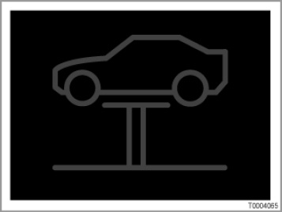
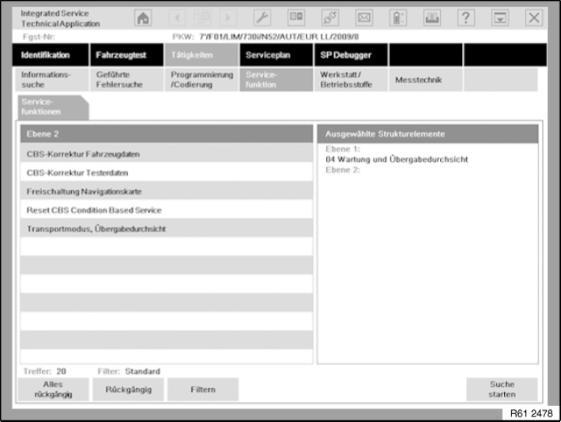

Scan Tool Testing and Procedures
61 00 ... Diagnosis For Condition Based Service

NOTE: Red symbol for pre-delivery check
The vehicle is coded at the end of the assembly line so that the red symbol for the pre-delivery check is shown in the Next Service display (same symbol as vehicle check).
The symbol is a reminder to the Service staff that the pre-delivery check has not yet been carried out on this car.
NOTE: Do not carry out a reset.
Do not confuse this function with the "Vehicle check" scope of maintenance work. Do not perform a reset via the instrument panel.
When performing the pre-delivery check with the service function "Transport mode/pre-delivery check": The symbol is suppressed automatically after carrying out the service function.

4 service functions are available in the BMW diagnosis system for maintenance:
- Transport mode/pre-delivery check
- CBS correction, tester data
- Reset CBS
- CBS vehicle data correction
Service Function: Transport Mode/Pre-delivery check
In order to ensure that a vehicle can be handed over to the customer in proper condition, the "Transport mode/pre-delivery check" service function must be performed.
The following items are checked during the pre-delivery check:
- Deactivation of the transport mode.
- To determine the vehicle-specific distance travelled per week an adaptation process is activated. Transport and immobilization periods before vehicle delivery to the customer therefore do not have any effect on the customer-specific weekly distance travelled.
The weekly mileage/kilometrage is used to control escalation from "green" to "yellow" (approx. 4 weeks before "red") for maintenance scopes with remaining distances. It is the distance travelled determined over the last 6 weeks which is taken into account.
- Encoding or deletion of the legally-specified intervals for the legally stipulated vehicle inspection and emissions test.
- Inputting the target dates for the legally stipulated vehicle inspection and emissions test (automatically or manually). Automatically: By entering the date of the first registration and the interval
- Manually: by directly entering the target date
- Entry of local, service-related phone numbers, depending on vehicle equipment specification (e.g. BMW Group Mobile Service, BMW Hotline, customer's local dealer).
The country-specific phone numbers are displayed in the BMW diagnosis system as information text. When asked for input information the phone numbers can simply be read off.
- Information on initializing the TeleService depending on the vehicle equipment.
- Checking and where necessary adjusting the on-board date for the vehicle.
- Entry of the date of the first registration of the vehicle.
- Delete fault memory.
NOTE: Reduction of input effort.
In order to minimize the input effort for the workshop, standardized data is saved on the BMW diagnosis system (for repeat use). The standardized data can be changed with the "CBS Correction Tester Data" service function.
Service Function: CBS Correction Tester Data
During the service function "Pre-delivery check", the data is automatically stored in the vehicle. With the service function "CBS correction, tester data", standardized data can be changed.
The following standardized data can be modified:
- Phone numbers:
- BMW Group Mobile Service
- BMW Hotline
- Local dealer
The country-specific phone numbers are contained in the BMW diagnosis system as information text (to be read off when required for input). The phone numbers must be input with the international dialling code.
- Legally stipulated vehicle inspection (country-specific):
- Encoding or deletion
- Interval for calculating the target date
The target date is calculated on the basis of the date of the first registration.
- Legally stipulated emissions test (country-specific):
- Encoding or deletion
- Interval for calculating the target date
The target date is calculated on the basis of the date of the first registration.
NOTE: Automation after installation of the BMW diagnosis system.
If the pre-delivery check is being carried out for the first time, the standardized data will be defined automatically. It is therefore not necessary to enter the data separately.
Service Function: Reset CBS Condition Based Service
The scope of maintenance work can be reset with the "Reset CBS Condition Based Service" service function. Even if availability is above 80 %. The reset via the BMW diagnosis system has the advantage that the on-board date is corrected automatically.
The individual maintenance scopes are displayed in the BMW diagnosis system with service counter and availability.
- The service counter is increased by one count on resetting. In new vehicles all service counters are set to "1".
The service counters are used in the Service Acceptance Module (SAM) to control the additional work for specific maintenance operations.
- On resetting the availability is set at 100%. The percentage availability is the wear value for the maintenance operation.
The greater the availability, the further away the next service.
0% means that the maintenance operation must be carried out.
Service Function: CBS vehicle data correction
IMPORTANT: The dates have been exceeded.
After carrying out this service function, it will no longer be possible to restore the previous status.
The service function "CBS vehicle data correction" is available if resetting has been carried out unintentionally. Thus the availability of a maintenance operation can be corrected to a value which corresponds more closely to the actual situation.
For this correction a date or kilometer reading is entered. This data is processed internally to give a percentage availability. Here, the BMW diagnosis system will only accept a value which is lower that the current status in the control unit. In addition, the service counter of the scope is automatically reduced by one counter.
The entries in the service booklet are used to determine the actual availability. The most recent maintenance measure (kilometer reading and date) allows the reconstruction availability for the specific scope that corresponds more closely to the actual situation. This excludes the correction of availability for brake pads. The remaining brake pad thickness must be measured and entered (in millimeters).
NOTE: Reference for distance- and time-dependent maintenance scopes
On correction the availability depends on the distance-dependent and time-dependent calculation.